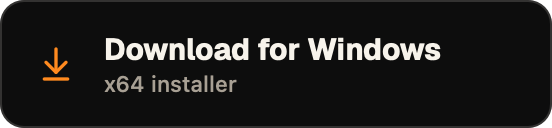
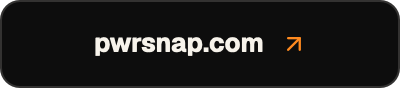
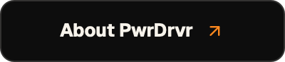

arrow-down-to-line at 20, arrow-up-right at 14 — published coordinates, stroke 2 on the 24 grid.tokens.css: the wash tops out at --accent-strong
#ffa33d, and the ink on tangerine is
--button-text-on-accent #000000 rather than a
warm near-black. The secondary fill and subtitle ink are not tokens at
all — they belong to the chip system and are identical family-wide.
primary fill
--button-text-on-accent
secondary fill
title ink
subtitle ink
--accent, icons
One opaque chip, not two theme variants
Every chip carries its own fill and clears contrast on white and on #0d1117 alike, so there is no <picture> and no doubled asset count. It also keeps the header correct where <picture> is ignored: npm, VS Code's preview, GitHub mobile.
Apple Silicon is the one primary
It is the build most arrivals want and the smaller download. Universal and Windows sit beside it in secondary, so the row still answers “which one is mine?” without a paragraph above it.
The subtitle names the build, not the benefit
“Universal · Intel + Apple Silicon”, “x64 installer”. Someone standing at a download chip is picking an artifact, and the second line is the only place that question gets answered.
Text that does not fit fails the build
A clipped label is silent in a PNG. apps/desktop/scripts/generate-readme-chips.swift measures every label against its chip and exits non-zero rather than writing one.
A chip may not point at a file that does not exist
The set is designed for everything PwrSnap builds, but an href is only direct once curl -sI -L says so. At the time of writing PwrSnap.dmg and PwrSnap.Setup.exe both resolve from releases/latest/download/, while PwrSnap-arm64.dmg exists only on the 1.1 prereleases — which releases/latest deliberately ignores — so the primary chip opens the Releases page and one sentence under the row says why. Flip the href in the commit after the first stable release carries the file; PwrGit did exactly this for its Windows alias.